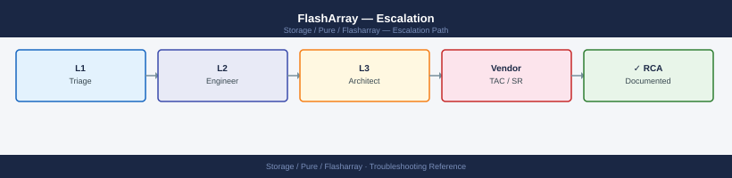
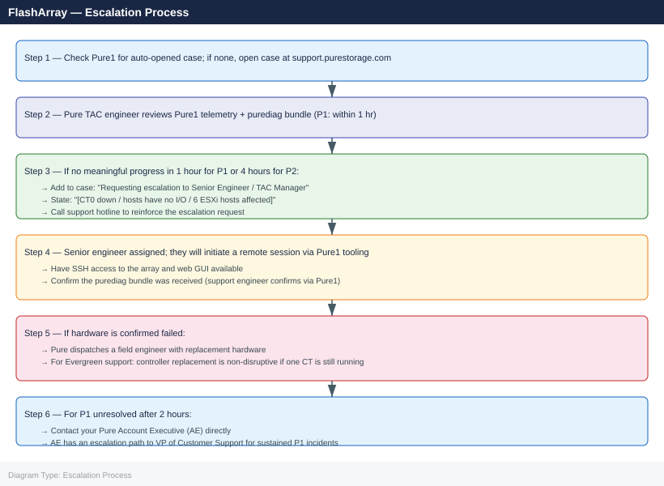

FlashArray — Escalation¶

Before you begin¶
- Access required: FlashArray admin credentials (SSH to array management IP or web GUI); Pure support account at support.purestorage.com with the array registered in Pure1
- Check Pure1 first: if phone-home is enabled, Pure may have already automatically opened a case for qualifying hardware faults (drive failures, controller faults, capacity thresholds). Log into pure1.purestorage.com → Support → Cases before opening a duplicate
- Do NOT pull failed drives without Pure guidance — the replacement procedure and sequencing is critical to avoid losing RAID redundancy
- Do NOT disable phone-home during the case — Pure1 telemetry is what the support engineer uses for remote diagnosis; disabling it delays resolution
Pre-Escalation Self-Check¶
Run these from the FlashArray CLI (SSH to management IP, then purectl or direct CLI commands).
| Check | Command | Expected result |
|---|---|---|
| Purity version | purearray list |
Note full Purity//FA version string |
| Array serial | purearray list |
Note the serial number for the case |
| Controller health | purearray list --controller |
Both CT0 and CT1 show ready |
| Active alerts | purealert list |
No unflagged Critical or Error alerts |
| Drive health | puredrive list |
No drives in failed or degraded state |
| Volume accessibility | purevol list |
No volumes in unhealthy state |
| Port state | pureport list |
All connected ports show connected |
| ActiveCluster pod state | purepod list |
All pods show online and uniform |
| Replication group state | purepgroup list |
All pgroups show expected replication status |
| Pure1 auto-case | pure1.purestorage.com → Support → Cases | Check for existing auto-opened case |
Step-by-Step Data Collection¶
1. Get the Purity version and array serial number¶
# Array identity, version, and serial — SSH to array management IP
purearray list
# Example output:
# Name Version ID Model Status
# flasharray1 6.4.10 <uuid> FA-X70R4 ready
Name Version ID Model Status
flasharray1 6.4.10 8b3e4c2a-91f7-4d2e-b8a1-7c5d9e2f1a3b FA-X70R4 ready
Common errors
| Error | Fix |
|---|---|
purearray: command not found |
Ensure you are SSH'd directly to the array management IP (not a controller host) and the Pure CLI tools are installed. |
Connection refused |
Verify the management IP is reachable with ping and that SSH is enabled on the array (check array network settings in the GUI). |
Authentication failed |
Confirm you are using the correct credentials and that your SSH key or password is valid for the pureuser account. |
Note the Version field (e.g. 6.4.10) and the Serial field — both required for the support case.
2. Capture current array state¶
# All active alerts — most important data for the case
purealert list
# Controller health (CT0 and CT1)
purearray list --controller
# Drive health — flag any 'failed' or 'degraded' entries
puredrive list
# Volume health
purevol list
# Port state (FC, iSCSI, NVMe-oF)
pureport list
# Host connections
purehost list --connection
# Array capacity and data reduction ratios
purearray list --space
Name Severity Code Description Created
vol-backup-20240115 critical 230 Volume has failed 2024-01-15T09:23:14Z
cache-tier-01 warning 120 Controller temperature elevated 2024-01-15T08:47:22Z
repl-lag-prod warning 105 Replication lag exceeds threshold 2024-01-15T07:12:09Z
Name Status Model Speed
CT0 healthy FlashArray//X70-2 7.2.0.1234
CT1 healthy FlashArray//X70-2 7.2.0.1234
Name Status Capacity Serial
SSD-0.0 healthy 1.92TB PUREFC191234567
SSD-0.1 healthy 1.92TB PUREFC191234568
SSD-1.0 degraded 1.92TB PUREFC191234569
SSD-1.1 failed 1.92TB PUREFC191234570
Name Size Provisioned Data Reduction
prod-db-01 500GB 1.2TB 3.8:1
backup-archive 2TB 4.5TB 2.1:1
dev-test-vol 100GB 250GB 1.5:1
Name Wwn Port Speed Status
CT0.FC0 50:00:14:40:1a:2b:3c:4d 0 16Gb online
CT0.FC1 50:00:14:40:1a:2b:3c:4e 1 16Gb online
CT1.iSCSI 50:00:14:40:1a:2b:3c:4f 2 10Gb online
Name Iqn Volumes
host-esx-01 iqn.1991-05.com.example:esx-01 prod-db-01, dev-test-vol
host-esx-02 iqn.1991-05.com.example:esx-02 prod-db-01
host-backup iqn.1991-05.com.example:backup-srv backup-archive
Capacity Used Data Reduction Snapshots Replication
10TB 6.2TB 2.3:1 1.8TB 0.9TB
Common errors
| Error | Fix |
|---|---|
purealert: command not found |
Verify the Pure Storage CLI tools are installed and the PATH includes the Pure bin directory (typically /opt/pureapp/bin). |
Error: Array unreachable at <ip_address> |
Confirm network connectivity to the array management IP and verify credentials are set via pureconfig or environment variables. |
Error: Invalid credentials |
Re-authenticate using pureconfig --username <user> --password or check that the API token in your session has not expired. |
Save all CLI output to a text file for pasting into the case.
3. Check ActiveCluster pod state (if ActiveCluster is configured)¶
# Pod health — shows whether pods are Online and synchronized
purepod list
# If a pod is not Online, check the mediator status
purepod list --mediator
# Pod member volumes
purepod list --member-type volume
Name Status Mediator Status Replication Status
pod-prod-01 Online Connected Synchronized
pod-prod-02 Online Connected Synchronized
pod-dr-backup Online Connected Synchronized
Name Status Mediator IP Mediator Status
pod-prod-01 Online 10.45.12.88 Connected
pod-prod-02 Online 10.45.12.88 Connected
pod-dr-backup Online 10.45.12.89 Disconnected
Name Pod Name Volume Count
pod-prod-01 flasharray-1 847
pod-prod-01 flasharray-2 847
pod-prod-02 flasharray-3 923
pod-dr-backup flasharray-4 612
Common errors
| Error | Fix |
|---|---|
Error: Invalid option '--mediator' |
Use purepod list --mediator-status or check your Pure OS version supports this flag. |
Error: Pod 'pod-name' status is Offline |
Verify network connectivity between array members and check mediator connectivity with purepod list --mediator. |
4. Generate and send the diagnostic bundle¶
# If phone-home is enabled (recommended) — sends bundle directly to Pure TAC
purediag --send
# If phone-home is disabled — generate a local bundle for manual upload
purediag --output /tmp/diag_$(hostname)_$(date +%Y%m%d_%H%M).tgz
# Copy from the array to a management host
scp pureuser@<array-mgmt-ip>:/tmp/diag_*.tgz /tmp/
Generating diagnostic bundle...
Connecting to Pure TAC...
Bundle size: 2.3 GB
Uploading: ████████████████████ 100%
Upload complete. Case #: CS-2024-0847392
Transmission time: 47 seconds
Generating diagnostic bundle...
Bundle written to: /tmp/diag_flasharray-prod-01_20240215_1423.tgz
Size: 2.3 GB
Generation time: 89 seconds
pureuser@192.168.1.45's password:
diag_flasharray-prod-01_20240215_1423.tgz 100% 2342MB 18.5MB/s 02:06
Common errors
| Error | Fix |
|---|---|
purediag: command not found |
Ensure you are running this command on the FlashArray management interface or install the Pure CLI tools on your management host. |
Permission denied (publickey,password) |
Verify the pureuser account credentials and that SSH key-based authentication is configured, or use ssh-keyscan to add the array to your known_hosts file first. |
No such file or directory |
The diagnostic bundle may still be generating; wait 2-3 minutes and retry the scp command, or check available disk space on the array with ssh pureuser@<array-mgmt-ip> df -h. |
Note: purediag --send ties the bundle to the array's Pure1 account. When you open the case, Pure support can retrieve the bundle from Pure1 directly using the array serial number.
5. Write the timeline¶
Purity version: 6.4.10
Array: flasharray-prod-01 (serial: <array-serial>)
Model: FlashArray //X70R4
Issue first observed: 2026-06-14 14:30 UTC
Last known good state: 2026-06-14 12:00 UTC
Changes in 24h before the issue:
- 12:00: Purity upgrade from 6.4.9 → 6.4.10 applied via web GUI
- 14:30: Alert fired: "CT0 hardware fault — controller degraded"
- 14:35: 6 hosts lost access to volumes on CT0's preferred paths
Steps already taken:
- purealert list: 2 Critical alerts for CT0 hardware fault
- purearray list --controller: CT0 shows degraded; CT1 shows ready
- purediag --send: bundle sent at 14:40 UTC
- Pure1 portal: no automatic case found for this array
- Did NOT reboot controllers or pull drives
Blast radius: 6 ESXi hosts have partial path loss; VMs are I/O retrying on CT1 paths
How to Open the SR on support.purestorage.com¶
-
Go to support.purestorage.com and sign in with your Pure account. If you do not have one: click Register and use your company email — your account must be linked to the array in Pure1. Request access from your Pure account team if needed.
-
First check Support → Cases to see if Pure has already auto-opened a case for this fault. If yes, add your notes to the existing case.
-
Click Open a New Case (or Create Case).
-
Under Product, select FlashArray.
-
Under Array, select your array from the registered array list (linked via Pure1). If the array does not appear, enter the serial number manually.
-
Under Purity Version, enter your Purity//FA version from Step 1.
-
Under Severity, select:
- P1 — Critical: Both controllers unreachable; all hosts have lost I/O access; production completely halted; data inaccessible; no workaround
- P2 — High: Single controller degraded; drive failures reducing RAID redundancy; ActiveCluster pod partitioned; significant I/O impact; alternate paths still functional
- P3 — Medium: Non-critical issue with a workaround; isolated performance degradation; non-production host affected; slow alert not affecting I/O
-
P4 — Low: How-to, pre-upgrade planning, documentation request, or general advisory question
-
In the Subject field: array model + symptom + scope. Example:
FlashArray //X70R4 flasharray-prod-01 — CT0 controller degraded after Purity 6.4.10 upgrade, 6 hosts have partial path loss. -
In the Description field, paste:
- Purity version and array serial from Step 1
- The full
purealert listoutput from Step 2 - The
purearray list --controllerandpuredrive listoutput from Step 2 -
The timeline from Step 5
-
Under Attachments, upload the purediag bundle if you generated it locally (Step 4). If you used
--send, note that in the description: "purediag --send executed at 14:40 UTC". -
Click Submit. You will receive a case number by email immediately.
-
P1 only: call Pure support immediately after submission:
- Global: +1-650-729-4088 (24×7)
- EMEA: +44 808 189 0119
- State "P1 — FlashArray controller down / hosts have no storage / production halted" at the start of the call.
Escalation Path¶

What NOT to Do¶
| Do NOT do this | Why | What to do instead |
|---|---|---|
| Pull a failed drive without Pure guidance | The replacement sequence is critical; removing the wrong drive first can lose RAID redundancy | Wait for Pure to confirm which drive to replace and the exact sequence |
Run purearray reset without Pure |
Factory resets the array; destroys all data and configuration | This is never the right action during a P1 incident — escalate instead |
| Delete protection groups or pods mid-case | Changes the replication topology Pure is analysing | Freeze all replication configuration changes |
| Disable phone-home (Pure1 connectivity) | Severs the telemetry channel Pure uses for remote diagnosis and automated dispatch | Leave phone-home enabled; it dramatically accelerates diagnosis |
| Apply a Purity upgrade mid-incident | Changes the OS version under investigation; upgrade may be blocked by the current fault | Freeze all upgrades until the case is resolved |
| Open multiple cases for the same array | Splits diagnostic context; Pure1 may link the telemetry to the wrong case | Use one case; add all updates to the same SR number |
Useful Commands for Case Updates¶
# Array state snapshot — paste into every case update
purearray list
purearray list --controller
purealert list
# Drive health (flag any 'failed' or 'degraded' entries)
puredrive list
# Volume health
purevol list
# Port and host connectivity
pureport list
purehost list --connection
# ActiveCluster pod state
purepod list
# Replication group state
purepgroup list
# Performance snapshot (latency and throughput)
purearray monitor
# Send updated diagnostic bundle to Pure1
purediag --send
Name Status Version Model
flasharray-prod Online 6.4.2 FA-405
flasharray-prod Online 6.4.2 FA-405
AlertId Severity Code Message Timestamp
12847 warning DRIVE_WEAR Drive nearing end of life 2024-01-15T09:23:14Z
12891 critical CTRL_TEMP Controller temperature elevated 2024-01-15T10:45:22Z
Name Status Capacity Used Type
SSD.1 Healthy 1.92TB 1.54TB SSD
SSD.2 Healthy 1.92TB 1.68TB SSD
SSD.3 Healthy 1.92TB 1.71TB SSD
SSD.4 Degraded 1.92TB 1.89TB SSD
...
Name Status Size Provisioned
prod-db-vol-01 Online 500GB 450GB
prod-db-vol-02 Online 1TB 950GB
backup-vol-03 Online 2TB 1.8TB
...
Name Status Speed Enabled
CT0.ETH0 Online 10Gbps Yes
CT0.ETH1 Online 10Gbps Yes
CT1.ETH0 Online 10Gbps Yes
CT1.ETH1 Online 10Gbps Yes
HostName IQN/WWN Connection
esx-host-01 iqn.1991-05.com.emc:... Connected
esx-host-02 iqn.1991-05.com.emc:... Connected
db-server-prod iqn.1991-05.com.emc:... Connected
...
Name Status Replication Mediator
pod-primary Online Active mediator-01
pod-secondary Online Active mediator-01
Name Status Direction Lag
pg-prod-to-dr Synced Outbound 0ms
pg-backup-sync Synced Outbound 2ms
Timestamp Read_Latency Write_Latency Throughput_Read Throughput_Write
2024-01-15T10:50:00 1.2ms 2.1ms 4.2GB/s 3.8GB/s
Diagnostic bundle generated: diag_flasharray-prod_20240115_105234.tar.gz
Uploading to Pure1... [████████████████████] 100%
Upload complete. Case reference: CS-2024-0847291
Common errors
| Error | Fix |
|---|---|
purearray: command not found |
Ensure the Pure Storage CLI tools are installed and the PATH includes the installation directory (typically /opt/purearray/bin). |
Error: Array unreachable at 192.168.1.100 |
Verify network connectivity to the array management IP and confirm firewall rules allow access to port 443. |
purediag: Authentication failed |
Confirm your Pure1 API token is valid and has not expired; regenerate credentials in Pure1 if necessary. |
Support SLA Reference¶
| Severity | Definition | Initial Response SLA |
|---|---|---|
| P1 — Critical | Both controllers down; all I/O stopped; data inaccessible | 1 hour (24×7) |
| P2 — High | Single controller degraded; drive failures; pod partitioned | 4 hours (24×7) |
| P3 — Medium | Non-critical issue; workaround available; limited impact | Next business day |
| P4 — Low | How-to, planning, documentation, advisory | Best effort |
See also¶
Verify resolution¶
- Run
purearray list --controllerand confirm both CT0 and CT1 showready - Run
purealert listand confirm no Critical or Error alerts remain active - Run
puredrive listand confirm all drives showhealthy(or replacement confirmed by Pure) - Run
purehost list --connectionand confirm all expected host connections are active - Run
purevol listand confirm all volumes show expected status - For ActiveCluster: run
purepod listand confirm all pods showonlineanduniform - Confirm hosts can access storage: run an I/O test from one affected host
- Monitor for 15 minutes after the fix before confirming resolution to Pure